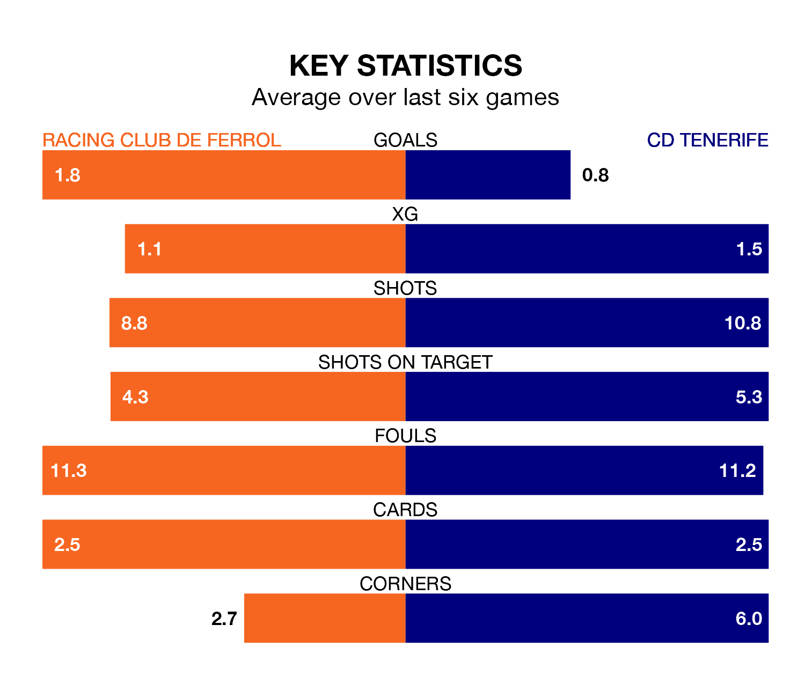

CD Tenerife travel to Racing Club de Ferrol on late Sunday in the Segunda División.
The visitors come into the game on the back of a win in their last match, having beaten AD Alcorcón 1-0 at home, with a goal from Ángel Rodríguez.
Racing Club de Ferrol, meanwhile, lost their last match, 1-0 against SD Huesca.
With 19 goals in 19 games so far this season, Tenerife are scoring at below the league average rate with 1.0 goals per game. But they are conceding fewer than average too, letting in 16 goals at a rate of 0.8 per game.
Racing, meanwhile, are above average scorers, with 1.3 goals per game, compared to a league average of 1.2. They have conceded 1.2 goals per game.
In Juan Soriano Oropesa, CD Tenerife can rely on one of the league's safest pair of hands. He has kept nine clean sheets in his 19 appearances this season, and only one other 'keeper – Sporting Gijón's Orlando Rubén Yáñez Alabart – has been able to prevent the opposition scoring on more occasions in the Segunda División.
In Ferrol's net, Ander Cantero Armendáriz has five clean sheets in 19 games. He has conceded a goal every 90 minutes, 50% more often than the 132 minutes between goals for Soriano Oropesa.
Racing Club de Ferrol are sixth in the table after 19 games, of which they have won eight and drawn seven, earning 31 points.
The away team are one place behind the hosts in seventh, with nine wins and three draws putting them on 30 points.
Racing are in reasonable form in the Segunda División, with three wins and two draws from their last six games.
With two wins and a draw over that period, Tenerife's form is worse – they have taken seven points from 18, compared to Racing's 11.
